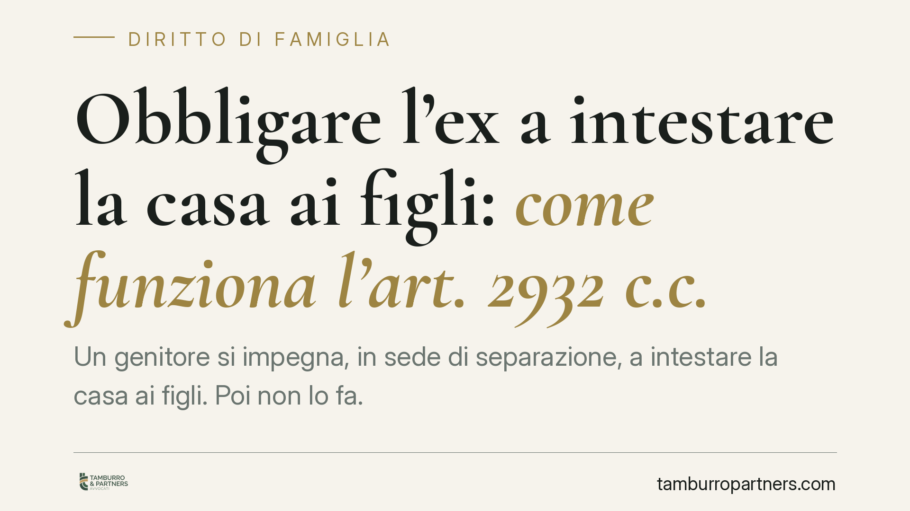
Obbligare l'ex a intestare la casa ai figli: come funziona l'art. 2932 c.c.
Un genitore si impegna, in sede di separazione, a intestare la casa ai figli. Poi non lo fa. L'altro genitore non è privo di strumenti: a certe condizioni l'obbligo può essere reso…
Permessi legge 104 tra più familiari: chi ne ha diritto e quali limiti
I permessi retribuiti della legge 104 possono coinvolgere più familiari dello stesso disabile. Ma quanti giorni spettano davvero e cosa succede se si superano i limiti? Le regole v…
Furti seriali e madre incinta: il rischio recidiva non basta a negare il rinvio della pena
Il solo rischio di recidiva non è sufficiente a negare il rinvio dell'esecuzione della pena a una donna incinta con figlio minore, anche dopo l'inasprimento normativo in materia di…
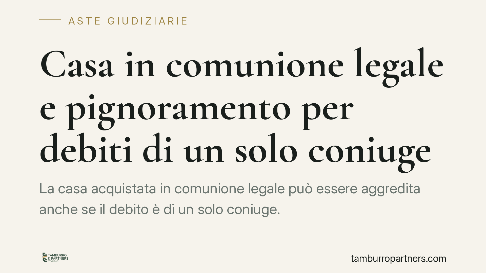
Casa in comunione legale e pignoramento per debiti di un solo coniuge
La casa acquistata in comunione legale può essere aggredita anche se il debito è di un solo coniuge. La comunione è un patrimonio unitario, senza quote: questo incide sulle modalit…
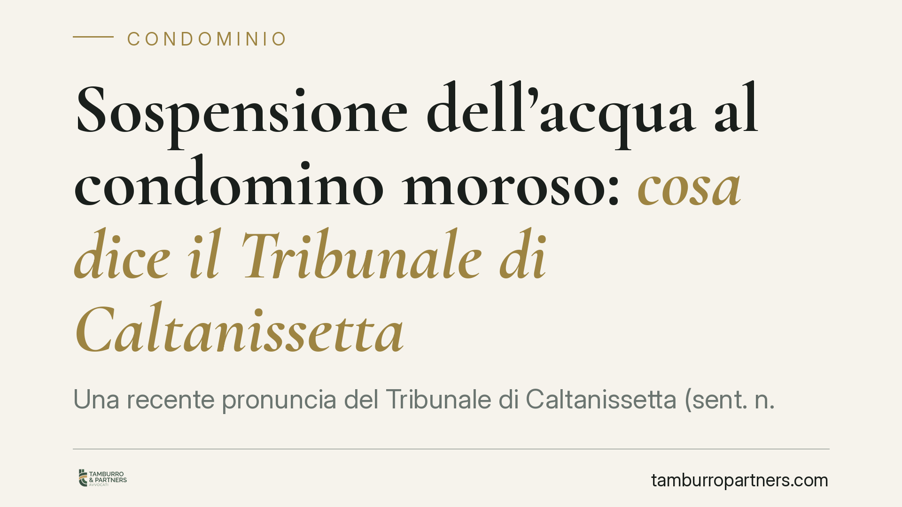
Sospensione dell'acqua al condomino moroso: cosa dice il Tribunale di Caltanissetta
Una recente pronuncia del Tribunale di Caltanissetta (sent. n. 459/2026) riconosce all'amministratore la facoltà di sospendere il servizio idrico al condomino moroso da oltre sei m…
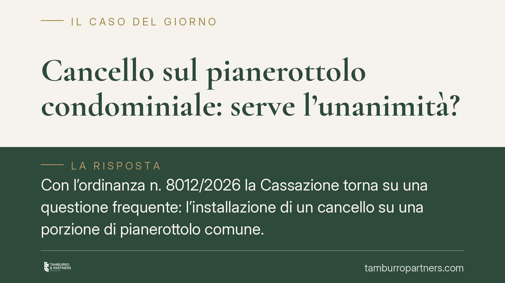
Cancello sul pianerottolo condominiale: serve l'unanimità?
Con l'ordinanza n. 8012/2026 la Cassazione torna su una questione frequente: l'installazione di un cancello su una porzione di pianerottolo comune. La Corte esclude la necessità de…
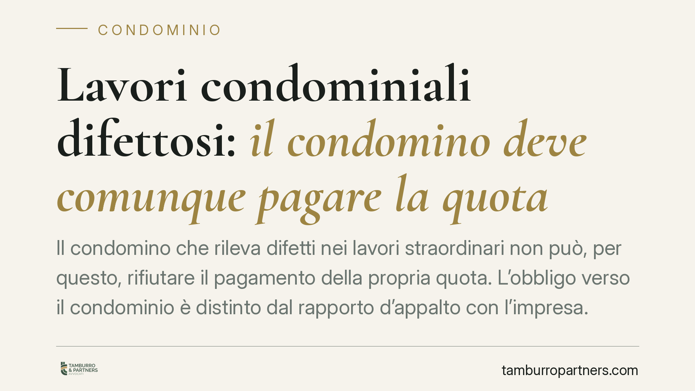
Lavori condominiali difettosi: il condomino deve comunque pagare la quota
Il condomino che rileva difetti nei lavori straordinari non può, per questo, rifiutare il pagamento della propria quota. L'obbligo verso il condominio è distinto dal rapporto d'app…
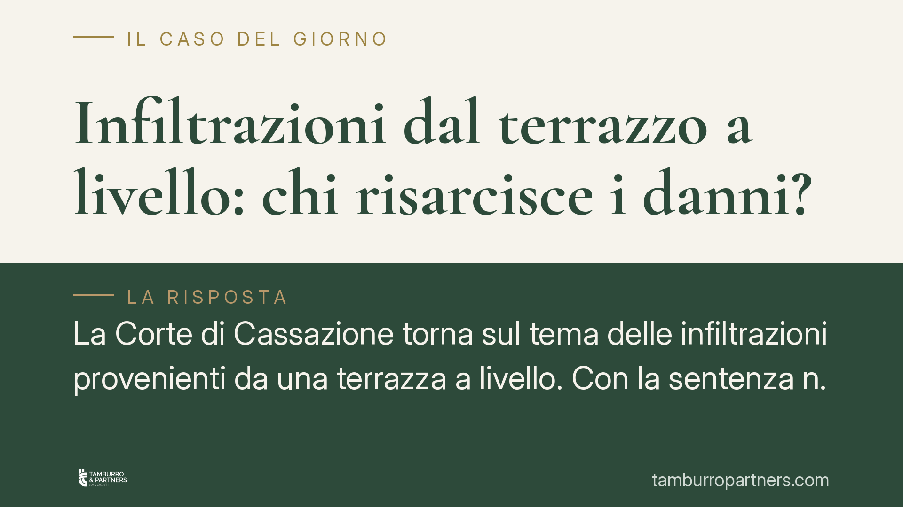
Infiltrazioni dal terrazzo a livello: chi risarcisce i danni?
La Corte di Cassazione torna sul tema delle infiltrazioni provenienti da una terrazza a livello. Con la sentenza n. 11585/2026 ribadisce un principio dalle ricadute pratiche rileva…
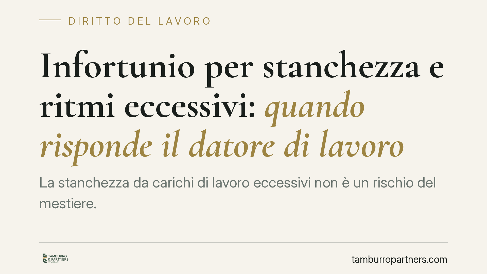
Infortunio per stanchezza e ritmi eccessivi: quando risponde il datore di lavoro
La stanchezza da carichi di lavoro eccessivi non è un rischio del mestiere. Quando l'infortunio deriva da turni prolungati e ritmi insostenibili, la responsabilità può ricadere sul…
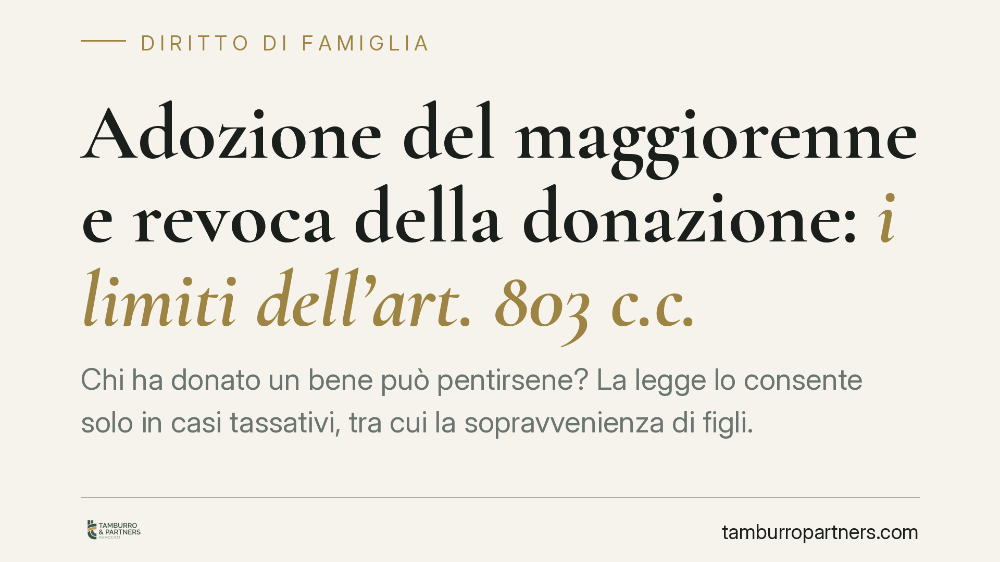
Adozione del maggiorenne e revoca della donazione: i limiti dell'art. 803 c.c.
Chi ha donato un bene può pentirsene? La legge lo consente solo in casi tassativi, tra cui la sopravvenienza di figli. Ma l'adozione di un maggiorenne rientra in questa ipotesi? Un…
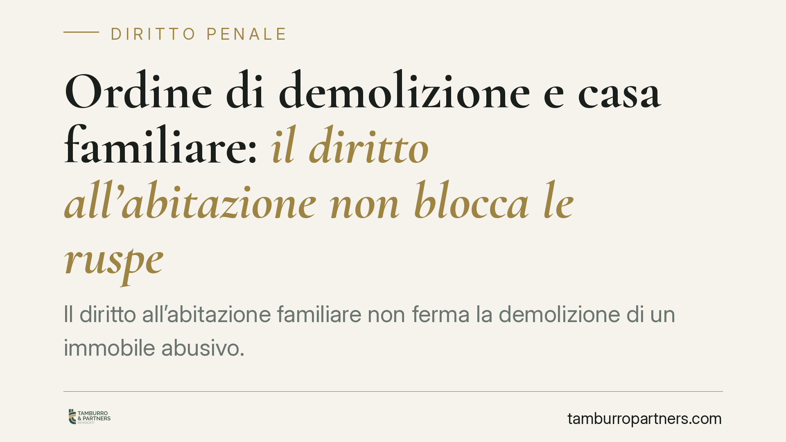
Ordine di demolizione e casa familiare: il diritto all'abitazione non blocca le ruspe
Il diritto all'abitazione familiare non ferma la demolizione di un immobile abusivo. Una recente pronuncia della Cassazione penale conferma che l'occupazione dell'immobile da parte…
Notifica semplificata e avviso di fine indagini: i limiti dell'art. 157-bis c.p.p.
La notifica semplificata al difensore, introdotta dalla riforma Cartabia, serve a snellire la comunicazione degli atti. Ma la giurisprudenza di legittimità precisa un limite decisi…
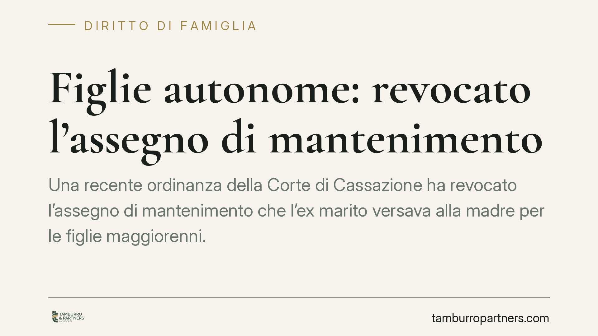
Figlie autonome: revocato l'assegno di mantenimento
Una recente ordinanza della Corte di Cassazione ha revocato l'assegno di mantenimento che l'ex marito versava alla madre per le figlie maggiorenni. Motivo: le figlie avevano raggiu…
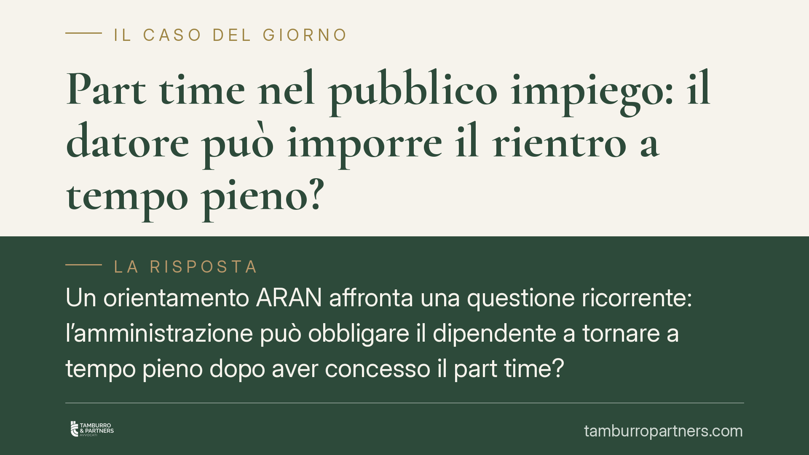
Part time nel pubblico impiego: il datore può imporre il rientro a tempo pieno?
Un orientamento ARAN affronta una questione ricorrente: l'amministrazione può obbligare il dipendente a tornare a tempo pieno dopo aver concesso il part time? La risposta distingue…
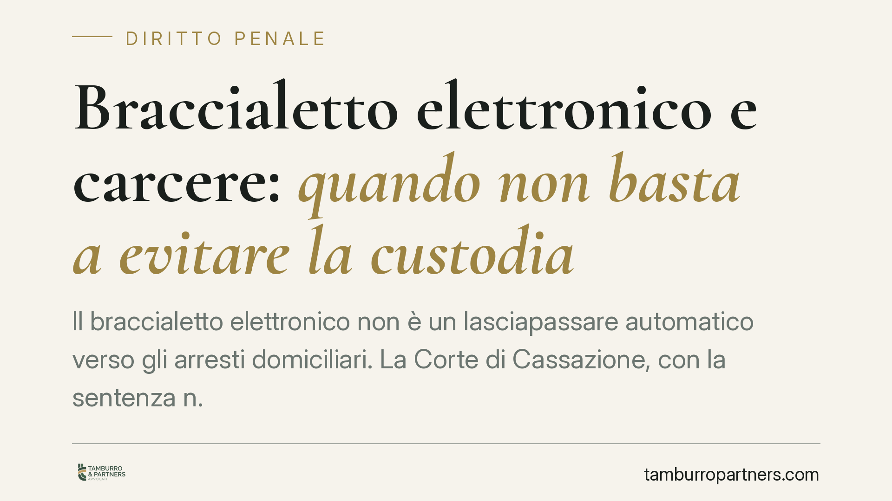
Braccialetto elettronico e carcere: quando non basta a evitare la custodia
Il braccialetto elettronico non è un lasciapassare automatico verso gli arresti domiciliari. La Corte di Cassazione, con la sentenza n. 18193/2026, ribadisce che quando la personal…
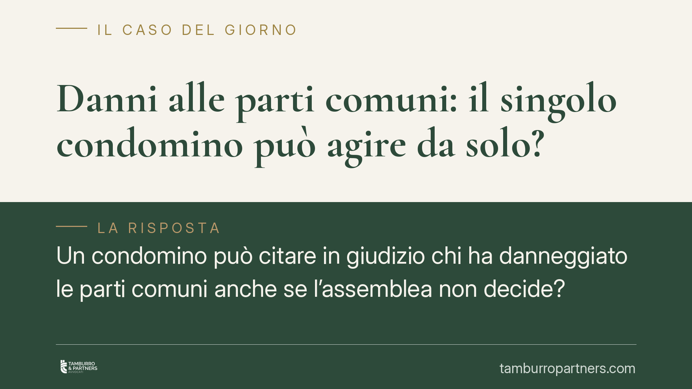
Danni alle parti comuni: il singolo condomino può agire da solo?
Un condomino può citare in giudizio chi ha danneggiato le parti comuni anche se l'assemblea non decide? La giurisprudenza di legittimità riconosce da tempo una legittimazione auton…
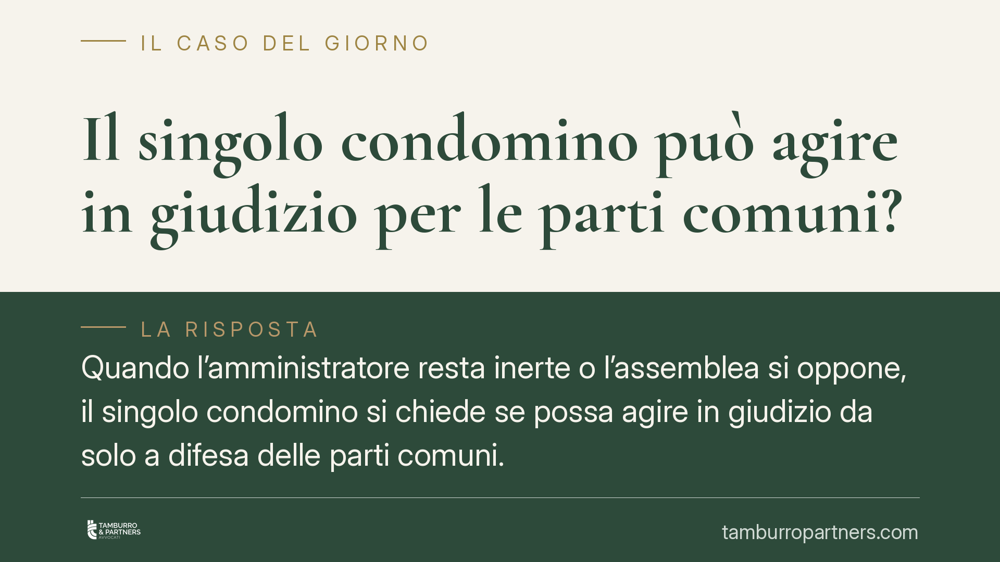
Il singolo condomino può agire in giudizio per le parti comuni?
Quando l'amministratore resta inerte o l'assemblea si oppone, il singolo condomino si chiede se possa agire in giudizio da solo a difesa delle parti comuni. La questione tocca beni…
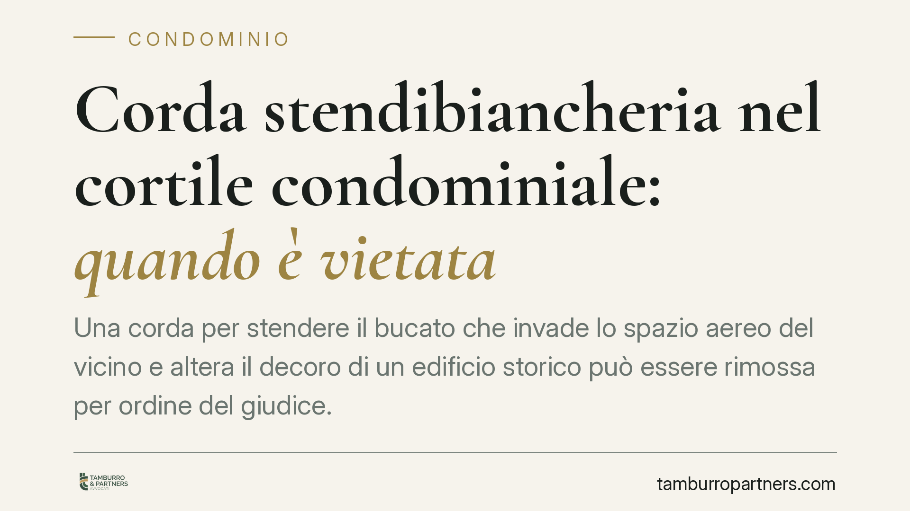
Corda stendibiancheria nel cortile condominiale: quando è vietata
Una corda per stendere il bucato che invade lo spazio aereo del vicino e altera il decoro di un edificio storico può essere rimossa per ordine del giudice. Una pronuncia del Tribun…
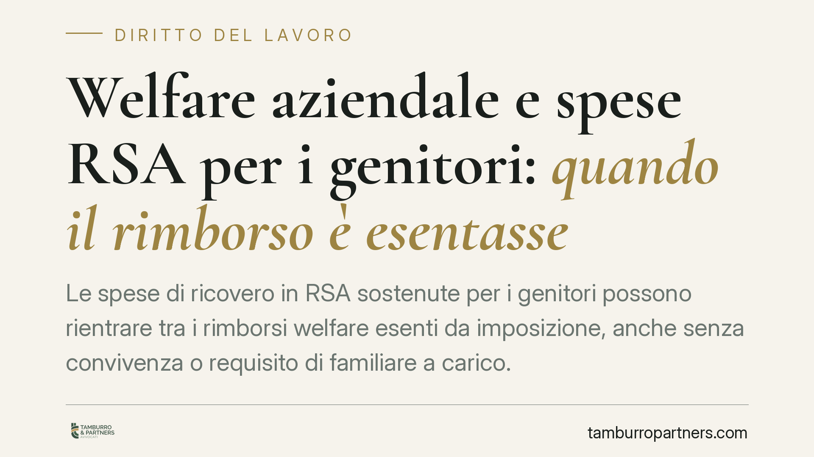
Welfare aziendale e spese RSA per i genitori: quando il rimborso è esentasse
Le spese di ricovero in RSA sostenute per i genitori possono rientrare tra i rimborsi welfare esenti da imposizione, anche senza convivenza o requisito di familiare a carico. La le…
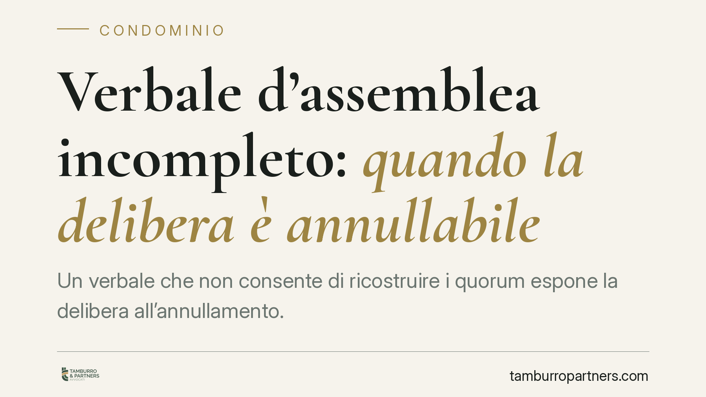
Verbale d'assemblea incompleto: quando la delibera è annullabile
Un verbale che non consente di ricostruire i quorum espone la delibera all'annullamento. È il tema affrontato da un recente orientamento di merito che ha censurato un verbale privo…
Pena accessoria oltre la media edittale: quando serve una motivazione rafforzata
Fissare una pena accessoria oltre la media edittale non è un automatismo: richiede una motivazione puntuale sui criteri dell'art. 133 c.p. e sulle funzioni della pena. Il tema torn…

Tetto condominiale trasformato in terrazza: quando è spoglio del compossesso
Trasformare il tetto condominiale in terrazza a uso esclusivo può costare caro. Con la sentenza n. 15515/2026 la Cassazione conferma che l'operazione integra spoglio del compossess…

Licenziamento per comporto e lavoratore disabile: serve un preavviso?
Prima di licenziare un lavoratore disabile per superamento del comporto, il datore deve avvisarlo? La giurisprudenza è divisa. Alcuni tribunali leggono l'avviso come accomodamento …

Legge 104 e permessi: quando l'INPS recupera le somme
I permessi ex art. 33 della Legge 104/1992 sono uno strumento essenziale per chi assiste un familiare con disabilità grave. Ma le regole su quanti giorni spettano e a chi sono spes…

Peer to peer e pedopornografia: quando il download diventa diffusione
La condivisione automatica tipica dei software peer to peer può trasformare il semplice download di materiale pedopornografico in una condotta di diffusione, molto più grave. Una r…

Installazione del cancello condominiale: bastano i voti della maggioranza ordinaria
Per installare un cancello che regola l'accesso a un'area comune non serve la maggioranza qualificata dei due terzi. La Cassazione conferma che si tratta di un intervento di ordina…

Appello nel rito del lavoro: l'omessa notifica lo rende improcedibile
Nel rito del lavoro chi propone appello deve notificare all'avversario il ricorso e il decreto di fissazione dell'udienza. La Cassazione ribadisce un principio severo: se la notifi…

Modifica dell'orario al caregiver Legge 104: quando è discriminazione
Cambiare in peggio l'orario a chi assiste un familiare con disabilità, senza reali ragioni organizzative, è discriminazione indiretta. Lo ha stabilito il Tribunale di Treviso, che …

Cessione della locazione commerciale con l'azienda: la responsabilità del vecchio conduttore
Chi cede l'azienda cede anche il contratto di locazione, senza bisogno del consenso del locatore. Ma il vecchio conduttore resta obbligato se il nuovo non paga? La questione, disci…

Sfruttamento del lavoro: la Cassazione torna sull'elemento soggettivo dell'art. 603-bis c.p.
Il reato di sfruttamento del lavoro previsto dall'art. 603-bis c.p. torna al centro dell'attenzione giurisprudenziale. Il punto controverso riguarda l'elemento soggettivo: quanta c…